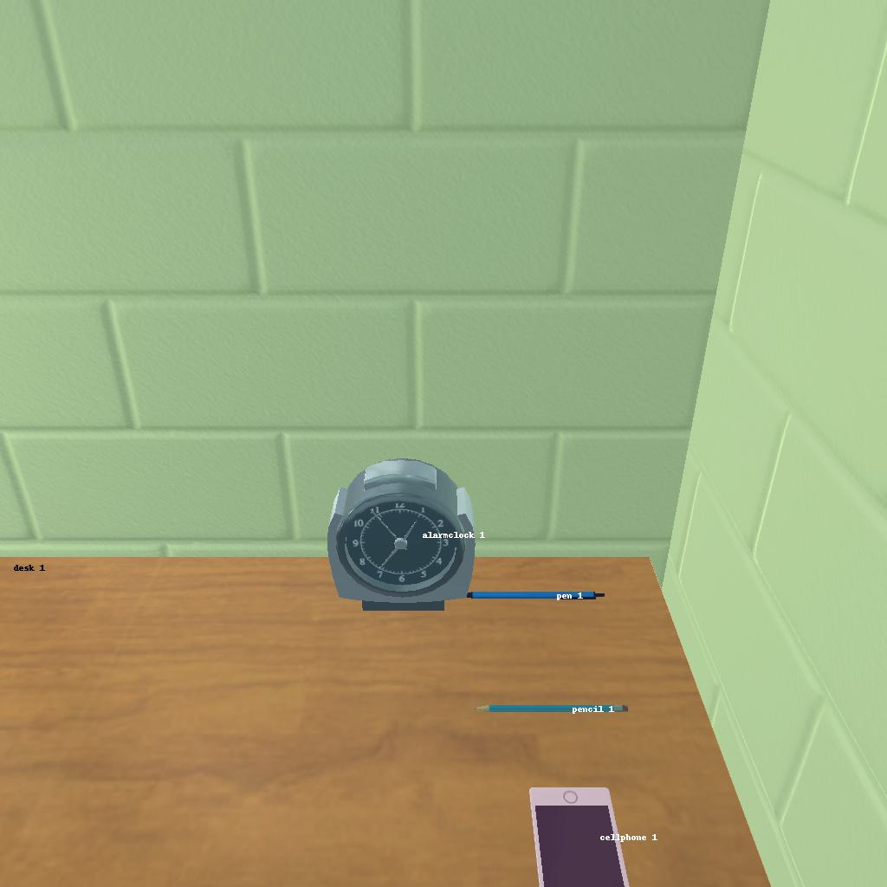

---------------------------------------------------------task: 8---------------------------------------------------------
--------------------------------------------------------------------------------------------------------------------------------------------------------------------
--------------------------------------------------------------------------------------------------------------------------------------------------------------------
Step:--------------------------------------------------------------------------2-------------------------------------------------------------------------------
----------------------------------------
VLM Prompt:
Image1:
Image2:
**Instruction**
1. Analyze the provided image to identify all visible household objects, focusing on those relevant to the task description "put some laptop on desk."
2. Use the analysis of the image and the task hint "The agent must find an object of the desired type, pick it up, find the correct location to place it, and put it down there." to answer the question: what is the most reasonable action in the choices for the task description "put some laptop on desk"?
4. Decide and write the answer using the template: The answer is: (i): , where i is the real number. If there is no desired object in the image, search every place based on **Initial Observation** to find the object. And if no one is exactly correct, choose a similar answer.
**Initial Observation**
You are in the middle of a room. Looking quickly around you, you can see bed (1), garbagecan (1), desk (1), sidetable (1), drawer (1-5), laundryhamper (1)
**Answer Choices**
(1): go to bed 1
(2): go to garbagecan 1
(3): go to sidetable 1
(4): go to drawer 2
(5): go to laundryhamper 1
(6): go to drawer 3
(7): go to drawer 4
(8): go to drawer 5
(9): open drawer 1
(10): close drawer 1
(11): examine drawer 1
**Answer**
Let's think step by step by following the instructions.
----------------------------------------
----------------------------------------
Original Response:
Firstly, we analyze the images provided:
Image 1:
- alarmclock 1
- pen 1
- pencil 1
- cellphone 1
- desk 1
Image 2:
- sidetable 1
- cd 1
- book 1
- pen 2
- drawer 1
- drawer 2
No laptop is visible in the provided images.
The task description is "put some laptop on desk," and we need to find an object of the desired type, which is a laptop. Since the laptop is not visible in the images, we refer to the Initial Observation to search for the object. The observation lists bed (1), garbagecan (1), desk (1), sidetable (1), drawer (1-5), and laundryhamper (1).
Out of these locations, a laptop is most likely to be found in a drawer. The images provided already show drawer 1 and drawer 2, which leaves us with drawers 3, 4, and 5 to search.
Based on this analysis, the most reasonable next action would be to go to one of the unopened drawers to search for the laptop.
The answer is: (6): go to drawer 3.
----------------------------------------
----------------------------------------
>>> Refine Original VLM Response and Get Pure Action: go to drawer 3
----------------------------------------
-----------------------------------------------------------------
Running time: 9.919730186462402 seconds
Total Money: 3.2643599999999986
-----------------------------------------------------------------
-----------------------------------------------------------------
Text Observation:You arrive at loc 7. The drawer 3 is closed.
-----------------------------------------------------------------
UNSUCCEED